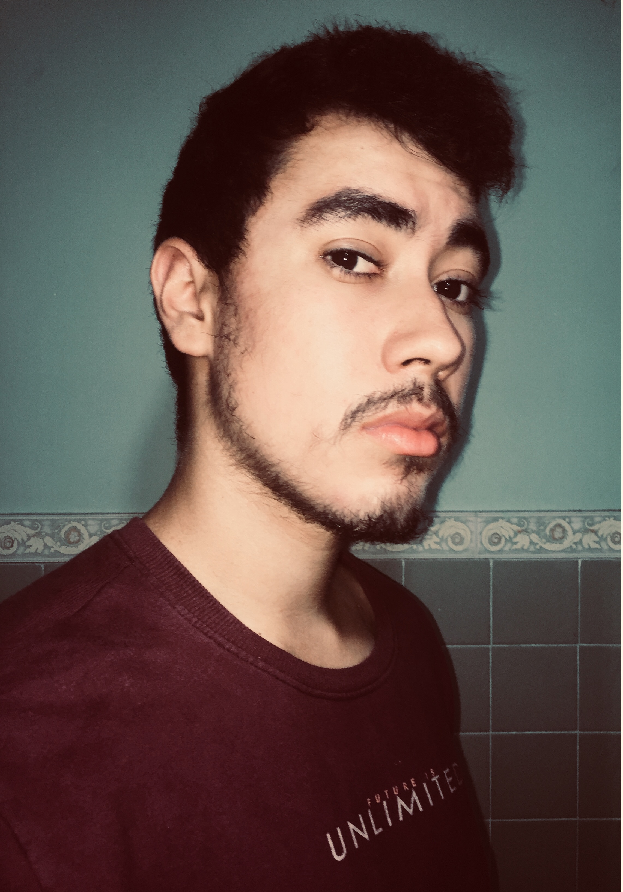

Juan Felipe Hurtado
Nací el 10 de abril del 2000 en Pitalito - Huila. Mis padres son Hugo Hurtado y Olga Trujillo. Mis estudios los llevé a abo en el Colegio Nacional de Pitalito en donde me formé y aprendí mis bases. Ahí fue donde empecé a conocer el mundo de los sistemas en la clase de informática. Cuando finalicé mis estudios me presenté en la Universidad Del Cauca, en donde actualmente realizo mis estudios universitarios.
